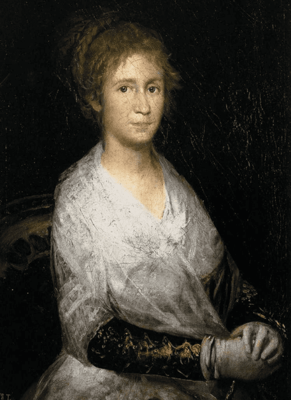

KLASYCYZM
-
wzorowanie się na
sztuce antycznej -
wydealizowane
statyczne formy -
pokazywanie scen
historycznych
DZIEŁA
-

Jacques Louis David - “Śmierć Sokratesa”, 1787
-

Jean Baptiste Regnault - “Złożenie”, 1789
-

Anne Louis Girodet de Roucy Trioson - “ Portret Napoleona I w szatach koronacyjnych”, 1804
ROMANTYZM
-
ważną rolę odgrywał “nastrój” na
obrazie, ekspresja -
wydealizowane
statyczne formy -
pokazywanie scen
historycznych
MALARZY EPOKI ROMANTYZMU
-

Francisco
Goya
-

Théodore
Géricault
-

Eugène
Delacroix
Francisco Goya - "Dom wariatów"
Francisco Goya
(1746 - 1828)
Francisco de Goya był jednym z najwybitniejszych artystów w historii. Zawsze innowacyjny, potrafił uprzedzić każdy z ruchów malarskich, które pojawiły się w Europie, od romantyzmu po surrealizm, w tym impresjonizm i ekspresjonizm. Dlatego uważany jest za ojca sztuki współczesnej.
Dzieciństwo
Francisco José de Goya y Lucientes urodził się 30 marca 1746 roku w wiosce Fuendetodos w Aragonii w Hiszpanii w rodzinie pochodzącej z niższej klasy średniej.
Próby podjęcia studiów i konkurs
W wieku 14 lat Goya uczył się u malarza José Luzána (1710-85). A w 18 lat Goya dwukrotnie aplikował na studia w Real Academia de Bellas Artes de San Fernando, ale po drugiej nieudanej próbie postanowił wyjechać do Włoch, gdzie otrzymał specjalne wyróżnienie w konkursie ogłoszonym przez akademię w Parmie w 1771r. 'Hanibal'
Po powrocie do Saragossy otrzymywał zamówienia na wykonanie fresków w kilku kościółach.
Małżeństwo
Artysta rozpoczął naukę z Francisco Bayeu (1734-95), dzięki któremu w lipcu 1773 poznał i poślubił jego siostrę Josefę Bayeu (1747-1812)
Zamówienia w Madrycie oraz sukces artysty
- -1786 został królewskim malarzem
- -1789 nadwornym
- - 1799 pierwszym nadwornym malarzem
W 1799 roku opublikował cykl ' Kaprysów', składający się z 80 grafik.
-
'Gdy rozum śpi, budzą się potwory'
-

'Osioł z dziada pradziada'
Druga miłość Goi
księżna Alba
Skandaliczne obrazy
-
"Maja naga"
-
"Maja ubrana""
-
Kolejny cykl grafik: "Okropności wojny"
1814 rok Goya maluje drugi wielki cykl grafik Oraz obraz:
3 maja 1808 rozstrzelanie powstańców madryckich
Migracja i śmierć Goi
W 1824 r. Goya postanawia się ukrywać, lękając się prześladowań ze
strony Francuzów, a następnie korzysta z amnestii i otrzymuje od króla
pozwolenie na podróż do Francji w celu leczenia. Wyjeżdża z kraju z Leocadią Weiss. \
W 1828 16 kwietnia Goya umiera w Bordeaux.
Théodore Géricault - "Portret artysty w swojej pracowni"
Théodore Géricault
(1791 - 1824)
- wybitny francuskich malarz i grafik doby romantyzmu.
Nazywany „malarzem koni i wariatów”, ze względu na tematykę swoich przerażających dzieł.
Dziasiaj dzieła artysty można podziwiać m.in. w Luwrze,
Nationalmuseum w Sztokholmie oraz londyńskiej galerii.
Nationalmuseum w Sztokholmie oraz londyńskiej galerii.
Dzieciństwo
Urodził się 26 września 1791 w bogatej rodzinie Louise-Jeanne-Marie Caruel i Georges-Nicolas Géricault.
Nauka
Od wczesnych lat wykazywał zainteresowanie sztuką, a w 1808 został uczniem C. Verneta.
Uważa się, że Géricault, zobacząc piękne konie na obrazach nauczyciela, zaczął również przedstawiać ich na swoich rysunkach.
Géricault wykorzystał to doświadczenie, aby póżniej stworzyć własny, niepowtarzalny styl, który odróżniał go od innych.
„Oficer szaserów”
Théodore Géricault, „Oficer szaserów”, 1812
I znowu konie

Théodore Géricault, „Derby w Epsom”, 1821
Podczas pobytu w Anglii i poznaniu twórczości pejzażystów – Johna Constable’a i Williama Turnera,
Géricault zmienia styl malarski, artysta większą uwagę przywiązuje do studium pejzażu, stanowiącego tło jego obrazów.
Nowy sposób obrazowania wykorzystuje w scenach ukazujących konie. Sporządził w tym czasie wiele akwarel, szkiców
Monomani
W latach 1820–1822 przebywał w Wielkiej Brytanii, gdzie malarz otrzymał zlecenie od zaprzyjaźnionego lekarza, specjalisty chorób umysłowych, który opracował teorię monomanii, czyli obłąkania z jedną obsesją. Géricault wykonał pełne wyrazu i ładunku emocjonalnego portrety przedstawiające ludzi upośledzonych umysłowo. Seria obrazów została opatrzona wspólnym tytułem Monomani.
SMIERĆ
Zmarł przedwcześnie na skutek obrażeń odniesionych w wyniku upadku z konia. Pochowany został na paryskim cmentarzu Père-Lachaise. Jego grób zdobi płaskorzeźba Tratwa Meduzy.
Eugène Delacroix - "Lion Hunt"
Eugène Delacroix
(1798 - 1863)
był jednym z najwybitniejszych francuskich malarzy romantycznych, którego użycie koloru miało wpływ na rozwój malarstwa zarówno impresjonistycznego, jak i postimpresjonistycznego.
Lata młodości
Ferdynand Victor Eugene Delacroix przyszedł na świat 26 kwietnia 1798 roku, w dużej posiadłości mieszczańskiej w Charenton Satint – Maurice, pod Paryżem.
Początki kariery
Delacroix coraz częściej otrzymywał oficjalne zamówienia. Głównie dzięki poparciu polityka Adolpha Thiresa, dawnego krytyka sztuki. W 1830 namalował obraz “Wolność wiodąca lud na barykady”
Ciekawostki
- -Obraz został umieszczony na banknocie stufrankowym na początku lat 90. XX wieku.
- -Obraz widnieje na okładce płyty „Viva la Vida or Death and All His Friends” zespołu Coldplay.
- -Chłopiec przedstawiony na obrazie zainspirował Victora Hugo do stworzenia postaci Gawrosza z „Nędzników”
Krytyka malarstwa artysty
Mimo popularności, jaką się cieszył przez długi czas, był nieustannie atakowany przez krytyków. Jego styl, koncepcja malarska i technika drażniły współczesnych mu odbiorców. Oskarżano go o “masakrowanie malarstwa” o to, że zaledwie umie szkicować. “Nic nie przeszkodzi mi w moim własnym postrzeganiu rzeczy” mówił Eugene Delacroix
Podróże i inspiracje
W 1825 roku udało mu się odwiedzić Anglię, którą podziwiał za dorobek malarski i literacki.
Przyjaźń z George Sand i z Frydyrykiem Chopinem
Delacroix spotkał George Sand pod koniec 1833 roku. Bardzo cenił sobie jej towarzystwo.
Portret George Sand i Fryderyka Chopina – Eugene Delacroix, 1838 rok
Sand przedstawiła Delacroix Chopinowi w 1838 roku
i obaj panowie pozostali bliskimi przyjaciółmi aż do śmierci kompozytora

Autoportret, 1838r
życie osobiste
Delacroix był raczej niestały w uczuciach. Bardzo często jego kochankami stawały się modelki pozujące do obrazów.
SMIERĆ
Zmarł 13 sierpnia 1863 roku. Delacroix pochowany jest na cmentarzu Père Lachaise w Paryżu.